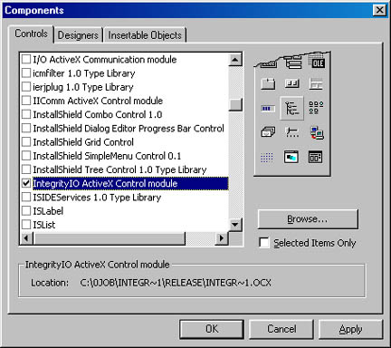
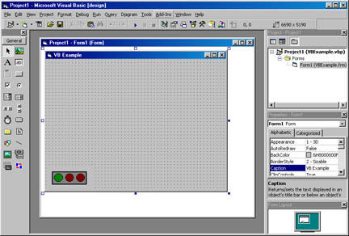
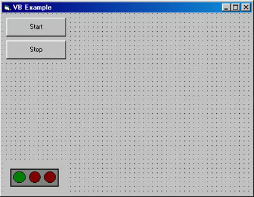
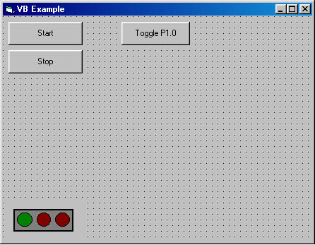
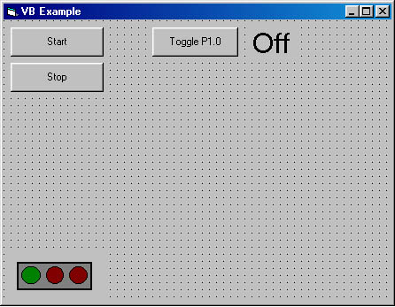
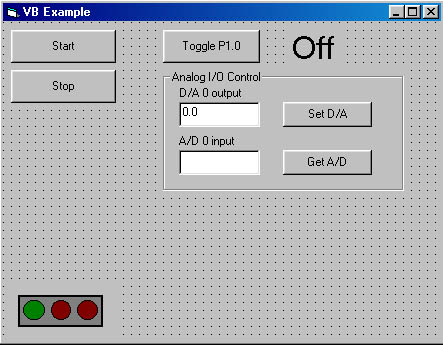

| Home | Visual Basic | Visual C++ | Testpoint |
This example was created using Microsoft Visual Basic version 6.0. The source code and Visual Basic project can be found in your program files directory in the Integrity Instruments\\IntegrityIO\Examples\VB folder. The source code contains the comments that were left out of this document to make it easier to read. The write of this document assumes that the reader has a basic working knowledge of the Visual Basic IDE. It is also assumed that the ADC-xxx module is connection to the computers COM1 serial port and that the ADC-xxx module communication speed is set to 115200 Baud (SW1 1 & 2 set to the on position).
Step 1 - Add the Integrity IO control to a new project.

Step 2 - Add the Integrity IO control to your form.

Step 3 - Add Start and Stop buttons to your form.
Set the Caption property for the Command1 button to Start, then set the Name property to btnStart.
Set the Caption property for the Command2 button to Stop, then set the Name property to btnStop.

Add the code for configuring configuing communications and setting up the digital port I/O by double clicking on the Start button. Port 1 bit 0 will be configured as an output, Port 2 bit 0 will be configured as an input. Add the following lines of code to the btnStart_Click() function:
IntegrityIO1.lnComPort = 1
IntegrityIO1.lnBaudRate = 115200
IntegrityIO1.bPortOpen = True
IntegrityIO1.SetDIOBitDDR 1, 0
IntegrityIO1.SetDIOBitDDR 0, 8
IntegrityIO1.lnDigitalPort = 0
Now add the code for closing the communications port. Add the following lines of code to the btnStop_Click() function:
IntegrityIO1.bPortOpen = False
At this point you can see the control do somthing. Run your project and press the Start button. If you have entered the code accuratly and the communcation port is available, the green light on the Integrity IO control will light up. Press the Stop button and the green light will turn off.
Step 4 - Add Button for Digtal I/O toggle function.

Step 5 - Add a label to display the state of Port1 Bit 0

Add a label to your form. Change the name propery of the label to lblPort2In
Set the caption property to Off.
Set the font property to MS Sans Serif size 24.
Add the code to toggle Port 1 bit 0 and update the display to the btnTogglePort_Click() function. This section assumes that Port 1 Bit 0 is looped back to Port 2 Bit 0 (P1.1 to P1.14).
Dim p2In As Long
p2In = IntegrityIO1.GetDIOBit(0)
p2In = p2In Xor 1
IntegrityIO1.SetDIOBit p2In, 8
p2In = IntegrityIO1.GetDIOBit(0)
If p2In = 1 Then
lblPort2In.Caption = "On"
Else
lblPort2In.Caption = "Off"
End IfStep 6 - Add objects for analog I/O

Set the name property of the D/A 0 text box to txtDAC0Output
Set the name property of the A/D 0 text box to txtADC0Input
Set the name property of the Set D/A button to btnDAC0Out
Set the name property of the Get A/D button to btnADC0InDouble click the Set D/A button, then add the following lines of code to the btnDAC0Out_Click() function.
Dim dTemp as Double
IntegrityIO1.lnDACControl = 0
dTemp = Val(txtDAC0Output)
If (dTemp < 0) Or (dTemp > IntegrityIO1.dReferenceVoltage) then
MsgBox "D/A output is out of range"
Exit SubEnd If
IntegrityIO1.dDACOutput = dTemp
IntegrityIO1.lnADCControl = 8
txtADC0Input = Format(IntegrityIO1.dADCUnipolar, "0.000")
Double click the Get A/D button, then add the following lines of code to the btnADC0In_Click() function.
IntegrityIO1.lnADCControl = 8
txtADC0Input = Format(IntegrityIO1.dADCUnipolar, "0.000")
Finally - Run the program and test the I/O
Make sure that Analog Out A is connected to Analog In Channel 0, and Port 1 Bit 0 is connected to Port 2 bit 0.
Run the project.
Press the start button. The green light on the Integrity IO control should light up.
Press the Toggle button. Each time you press the button, the Label should change from On to Off then Off to on.Enter a voltage between 0 and 5.0 volts in the D/A output text box and press the Set D/A button. This should update the A/D 0 input text box with the value read back from Analog Channel 0.